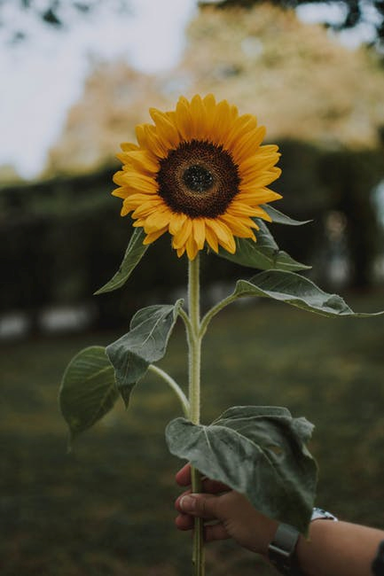

Voščilo Janezu Zemljariču
Janez Zemljarič, eden od ustanovnih članov Društva prijateljev Ptuja, obeležuje ob prehodu v Novo leto devetdeset let svojega bogatega življenja.
Ob jubileju mu želimo, da bi še naprej sodeloval z nami in vzpodbujal delo društva.
Vse najboljše!
